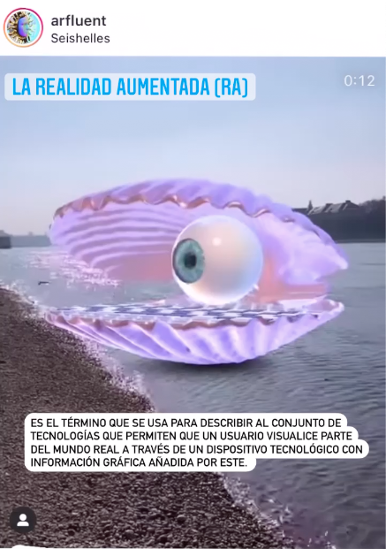
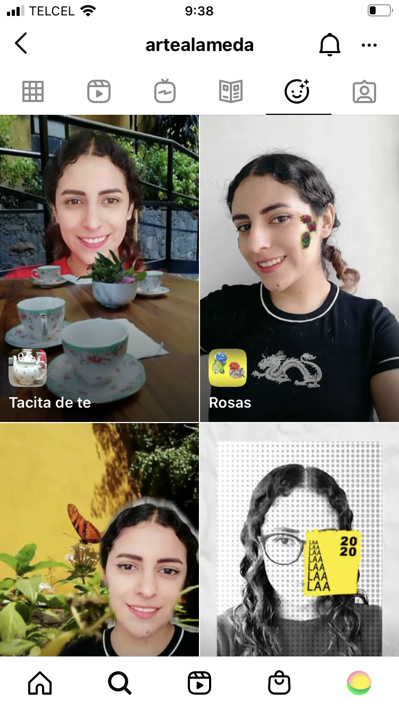

Inspirada en la publicación de 4chan publicada en el año 2019, the backroom apareció cómo un hilo donde se mencionaba pesadillas que mucha gente ha tenido en la cual las personas se encuentran encerradas en algún tipo de bodega o cuarto totalmente vacío y únicamente iluminado por lámparas fluorescentes, puede parecer un lugar sin salida, como un laberinto lleno de más cuartos iguales, con un olor a humedad; las personas que sueñan con esto, buscan desesperadamente una salida del lugar pero no logran encontrarla hasta despertar, desde entonces la comunidad se dedicó a especular sobre la existencia de las puertas hacia otro lugar, la construcción de imaginarios a través de esta estética se ha llevado a videojuegos como minecraft y roblox. Está es mi contribución a aquella pesadilla colectiva que lleva tres años circulando en internet, con esta pieza alimentó la leyenda de alguna vez haber estado en este sitio antes.
 